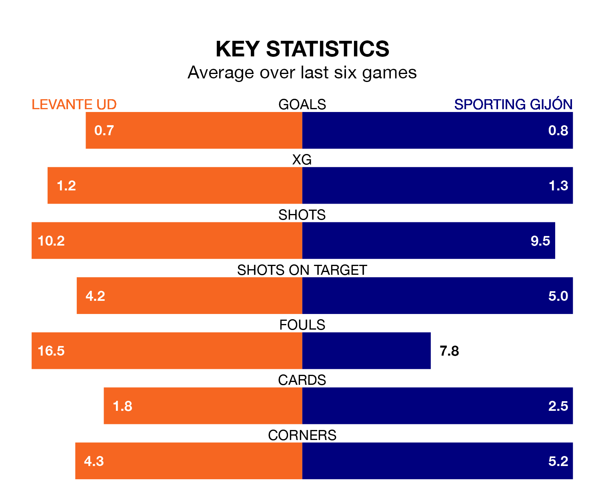

Levante UD face Sporting Gijón at the Estadio Ciudad de Valencia on Sunday looking to secure a first win in seven Segunda División games.
Levante have lost two and drawn four matches since they last earned three points – against Albacete Balompié on January 13.
They face a Sporting side who have won two and drawn one over that time.
With 34 goals in 28 games so far this season, Levante are scoring more than average in the league with 1.2 goals per game. But they are conceding more than average too, letting in 34 goals at a rate of 1.2 per game.
Sporting are also above average scorers, with 1.2 goals per game, compared to a league average of 1.1. They have conceded 0.9 goals per game.
The away team are fifth in the table after 29 games, of which they have won 12 and drawn 10, earning 46 points.
The hosts are eight places behind Sporting in 13th, with nine wins and 12 draws putting them on 39 points.
In Orlando Rubén Yáñez Alabart, Sporting can rely on one of the league's safest pair of hands. He has kept 11 clean sheets in his 25 appearances this season in the Segunda División.
In Levante's net, Andrés Fernández has 10 clean sheets in 20 games.
In the last three years, Levante and Sporting have played each other on three occasions. Levante won one of them and they drew the other.
Their last meeting was on December 9, when they played out a 0-0 draw.
Levante's last match was on March 2, a 3-2 loss against Real Oviedo, with Adrián De La Fuente and Carlos Álvarez getting the goals for Levante.
Sporting beat Albacete Balompié 2-1 last time out, on March 1, with José Ángel and Juan Ferney Otero Tovar on the scoresheet.
Sunday's match will be refereed by Manuel Jesús Orellana Cid, who has taken charge of 15 Segunda División games so far this season, issuing no red cards and booking 76 players. He has awarded four penalties.
The last Sporting game Orellana Cid refereed was the 1-0 win away at SD Huesca on October 1. He is yet to oversee a match featuring Levante this season.
Updated: 09:34 (UTC), 08/03/24